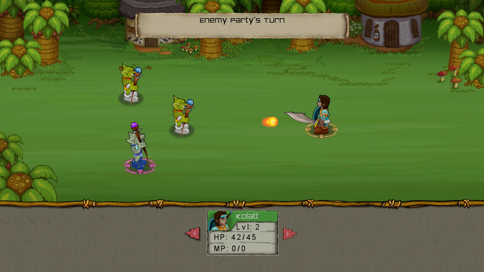

Role Playing Game
Ported from Microsoft's XNA 4.0 Role Playing Game for Windows and Xbox 360.
Source for this sample on GitHub ↗

Play ▸Opens in a new tab.
About this sample
Guide a party through a tile-based world, meet characters, track quests and fight monsters in turn-based combat. The game retains its original XNA content and save/load flow.
Controls
| Action | Control |
|---|---|
| Choose / confirm | Enter |
| Move / change selection | Arrow keys |
| Character management | Space |
| Back / menu | Escape |
| Change page | Left Shift / Right Shift |